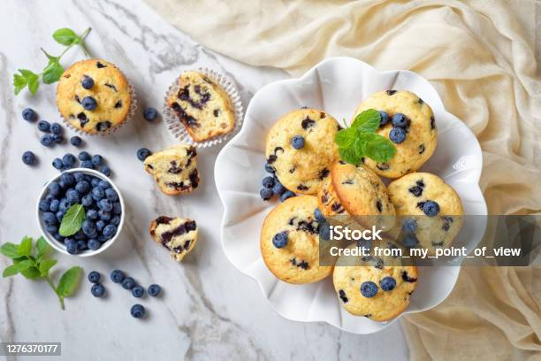

Home
Blueberry Muffins

Description
A beautiful mix of sweet muffins and tart blueberries. This one is a favorite of Austin's, and he has the secret to making them extra moist and delicious!
Ingredients
- All-purpose flour: 1 1/2 cups
- Granulated sugar: 3/4 cup
- Baking powder: 2 teaspoons
- Fine salt: 1/4 teaspoon
- Vegetable oil: 1/3 cup
- Large egg: 1
- Milk of choice: 1/3 cup
- Vanilla extract: 1 1/2 teaspoons
- Fresh or frozen blueberries: 1 cup
Steps
- Preheat oven to 400 degrees F (204 degrees C).
- Line muffin cups with paper liners (8 for big muffins, 10 for standard size).
- Lightly grease or spray top of pan with oil of choice to prevent muffin tops from sticking to pan.
- In a large bowl, whick together flour, sugar, baking powder, and salt.
- In a small bowl or measuring jug that holds at least 1 cup, add oil and crack in the egg. Pour enough milk to reach the 1-cup line of the jug. Add vanilla extract and whisk until combined.
- Add wet ingredients to the dry ingredients. Stire gently until combined.
- Gently fold in the blueberries. Do not overmix! The batter will be thick.
- Divide batter between the muffin cups. If you want big-topped muffins, fill to the top of the cups.
- Sprinkle a little sugar on top of each muffin.
- Bake muffins for 15 to 20 minutes or until the tops are no longer wet and the toothpick inserted in the center comes out with crumbs, not wet batter.
- Let cool for a few minutes before transferring baked muffins to a drying rack.